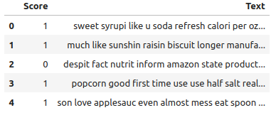
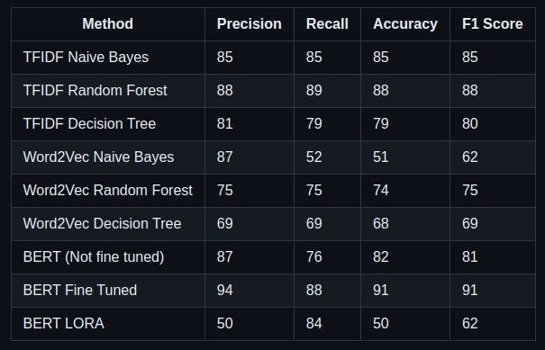

BERT and LoraBERT fine-tuning for Sentiment Analysis

Abstract
Sentiment analysis plays a crucial role in understanding customer opinions and feedback, especially in the realm of online reviews. This project delves into sentiment analysis using various techniques on the Amazon Fine Food Reviews dataset, encompassing over 500,000 reviews spanning more than a decade. Traditional machine learning models, word embeddings, and deep learning models are explored and compared for their efficacy in sentiment analysis. The dataset underwent rigorous preprocessing, including handling missing values, binary classification of ratings, and text cleaning. Traditional machine learning models were trained using TF-IDF vectorization, while word embeddings such as Word2Vec were employed alongside both traditional and deep learning models. Deep learning models, including BERT and its variant LoraBERT, were fine-tuned for sentiment analysis. The results highlight the superior performance of deep learning models, particularly BERT, in achieving high accuracy compared to traditional methods.
The dataset
Dataset after cleaning using tokenizer, stop words removal, lemmatizing and stemming.
Results
Introduction
Sentiment analysis, a subfield of natural language processing, focuses on extracting subjective information from text, enabling the interpretation of sentiments expressed in reviews, comments, or social media posts. In the context of e-commerce, sentiment analysis aids in understanding customer satisfaction, identifying trends, and informing business decisions. The Amazon Fine Food Reviews dataset, encompassing a vast array of reviews, provides an ideal platform for exploring and evaluating sentiment analysis techniques. This project aims to investigate and compare the performance of traditional machine learning models, word embeddings, and deep learning models in sentiment analysis, with a focus on accuracy, precision, recall, and F1-score metrics.
Methodologies
-
Data Preparation:
- The Amazon Fine Food Reviews dataset contains a wealth of information spanning over a decade and consisting of more than 500,000 reviews. It includes product and user details, ratings, and textual reviews.
- The initial step in data preparation involves loading the dataset and addressing missing values. Missing values are handled appropriately to ensure data integrity.
- To facilitate sentiment analysis, the numerical ratings provided by users are converted into binary classes, distinguishing between positive and negative sentiments. This step is crucial for training classification models.
- Textual data undergoes extensive cleaning to enhance the quality of analysis. This includes tokenization, where text is split into individual words or tokens. Stopwords, common words that do not contribute significant meaning to the text, are removed to reduce noise. Lemmatization and stemming are applied to normalize words, reducing them to their base or root form. These processes help standardize the textual data and improve the effectiveness of subsequent analysis.
-
Model Training:
- Traditional machine learning models, including Naive Bayes, Random Forest, and Decision Tree, are trained using TF-IDF (Term Frequency-Inverse Document Frequency) vectorization. TF-IDF represents the importance of a word in a document relative to a collection of documents, enabling the creation of feature vectors for training the models.
- Word embeddings, specifically Word2Vec, are employed to represent words in a continuous vector space. These embeddings capture semantic relationships between words, enhancing the ability of models to understand and generalize patterns in the textual data. Word2Vec embeddings are utilized alongside both traditional and deep learning models, enriching the feature representation of the data.
-
Deep Learning Model Fine-Tuning:
- Advanced deep learning models, such as BERT (Bidirectional Encoder Representations from Transformers) and its variant LoraBERT, are fine-tuned for sentiment analysis. BERT, known for its bidirectional contextual understanding of text, is particularly effective in capturing intricate patterns and nuances in language.
- The fine-tuning process involves splitting the dataset into training and test sets. The training data is used to fine-tune the pre-trained BERT model using the transformers library, optimizing its parameters for sentiment analysis on the Amazon Fine Food Reviews dataset. This iterative process adjusts the model's weights to minimize prediction errors and improve performance.
- LoraBERT, a variant of BERT with locally randomized attention, is also fine-tuned in a similar manner. However, its performance on this dataset is observed to be lower due to underfitting.
-
Evaluation:
- To accurately assess model performance, the dataset is divided into training and test sets. The trained models are then evaluated on the test set to measure their accuracy, precision, recall, and F1-score.
- The evaluation metrics provide insights into the models' ability to correctly classify sentiments and generalize to unseen data. Models with higher accuracy, precision, recall, and F1-score are deemed more effective in sentiment analysis tasks.
Results:
The results of the project reveal the effectiveness of various sentiment analysis techniques on the Amazon Fine Food Reviews dataset. Traditional machine learning models coupled with TF-IDF vectorization demonstrate reasonable performance, while Word2Vec embeddings yield slightly lower accuracy, attributed to potential contextual information loss. However, deep learning models, particularly BERT, outperform traditional methods, achieving the highest accuracy among all models evaluated. Fine-tuning BERT significantly enhances its performance, emphasizing the potential of leveraging advanced deep learning techniques for sentiment analysis tasks.